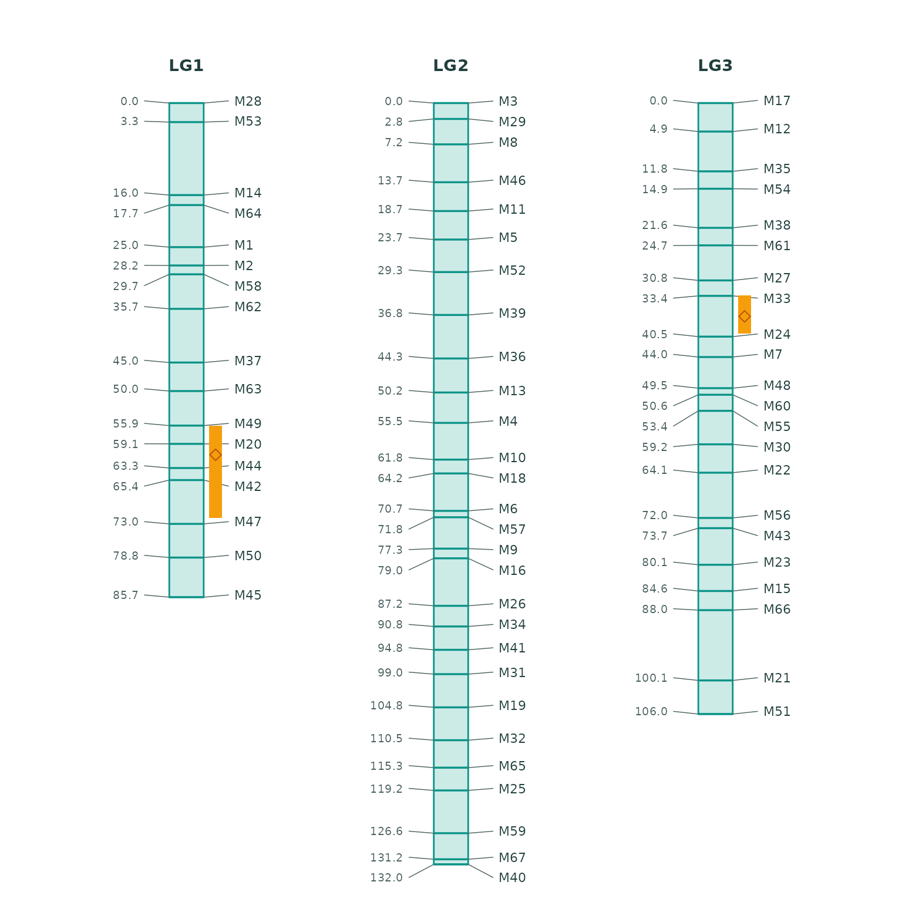

This article runs the app’s workflow in code, on the simulated backcross example from onemap (150 individuals, 67 markers, one trait).
library(linkmapper)
d <- linkmapper_demo("bc")
d
#> <Linkmapper data>
#> Population: Backcross
#> Individuals: 150
#> Markers: 67
#> Traits: 1Quality control
q <- qc_summary(d)
q$n_distorted
#> [1] 0
d <- filter_markers(d, max_missing = 0.25)Linkage groups and marker order
g <- linkage_groups(d)
g
#> <Linkage groups> 3 groups, 0 unlinked markers
#> group n_markers
#> 1 17
#> 2 28
#> 3 22
m <- order_groups(g, method = "record", map_fun = "kosambi", seed = 1)
map_summary(m)
#> lg markers length_cM mean_spacing largest_gap
#> 1 LG1 17 85.70 5.36 12.65
#> 2 LG2 28 132.04 4.89 8.25
#> 3 LG3 22 105.97 5.05 12.19QTL mapping
cross <- build_cross(d, m)
r <- scan_qtl(cross, method = "hk", n_perm = 200, seed = 1)
r$peaks
#> lg position lod p_value interval_low interval_high nearest_marker pve
#> 1 LG1 61 11.26 0 56.0 72 M20 29.24
#> 2 LG3 37 24.30 0 33.4 40 M24 52.58
#> additive
#> 1 2.669
#> 2 3.594
plot_lod(r)
plot_linkage_map(m, r)
Reproducing an analysis
Every setting the app records is a list that
run_analysis() replays:
s <- default_settings(d)
s$qtl$n_perm <- 200
res <- run_analysis(linkmapper_demo("bc"), s)
identical(res$map$positions, m$positions)
#> [1] TRUE